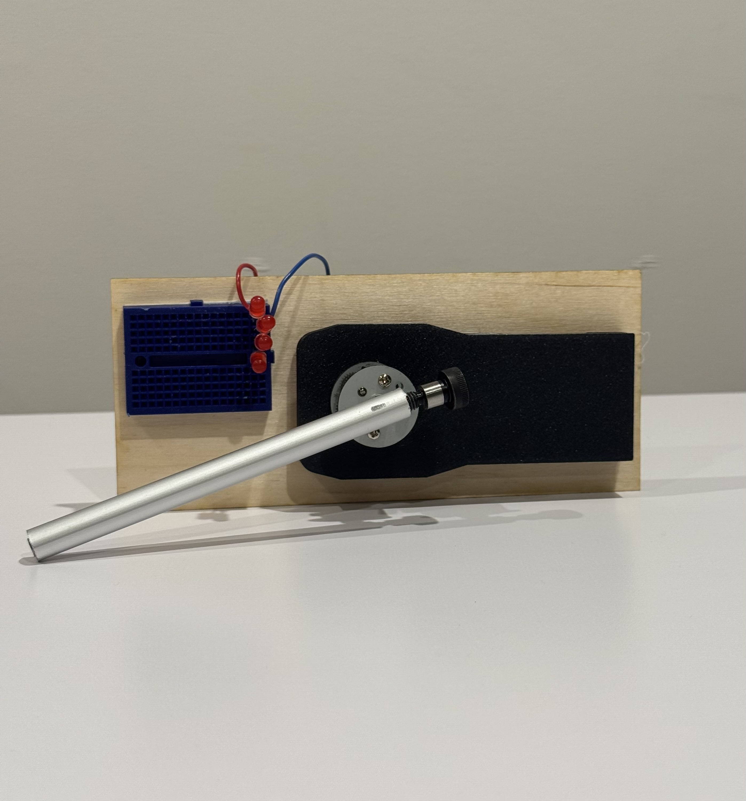
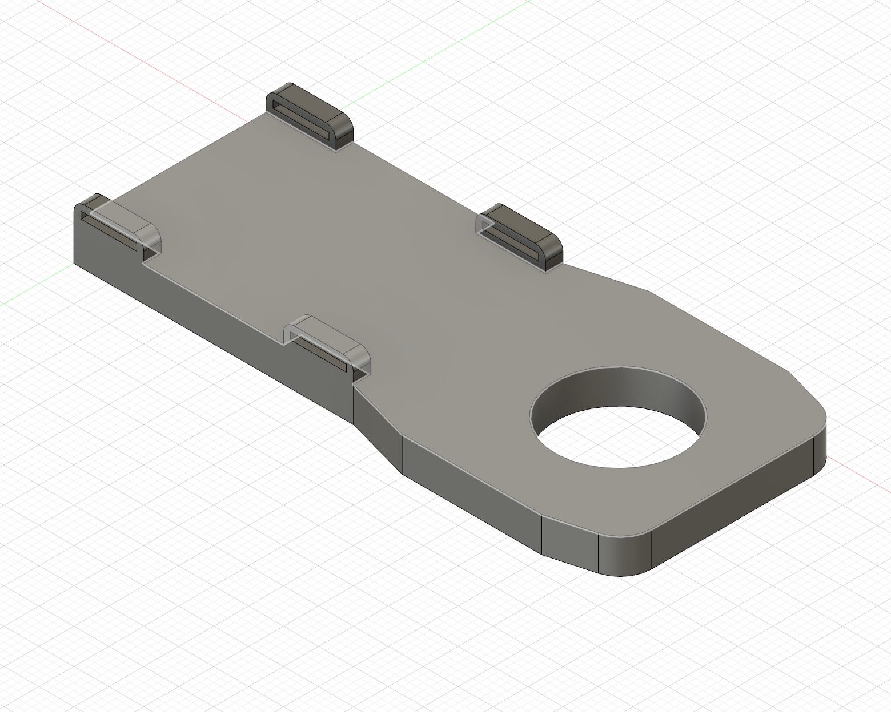
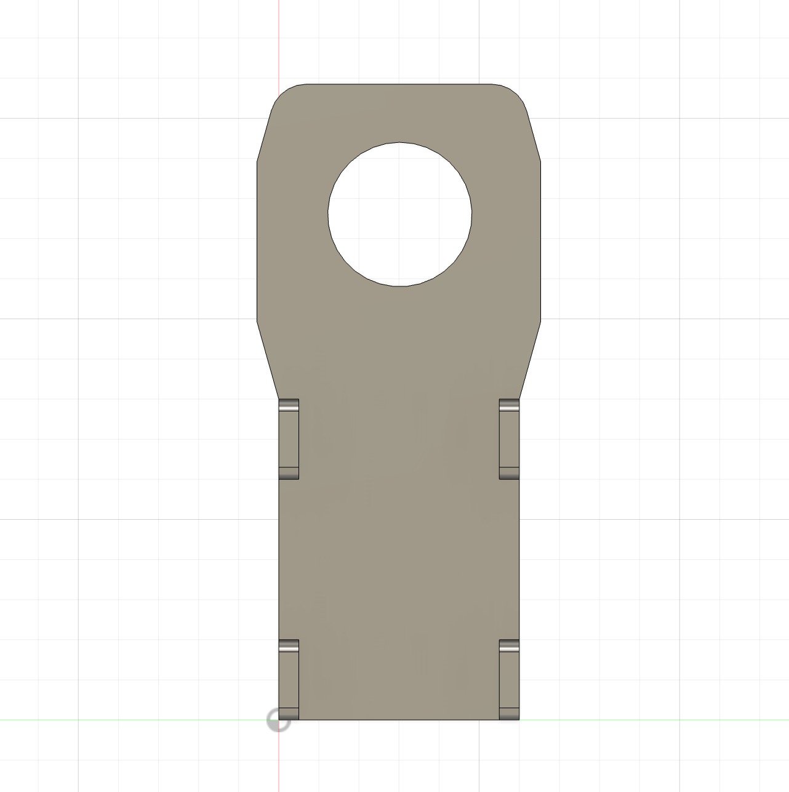
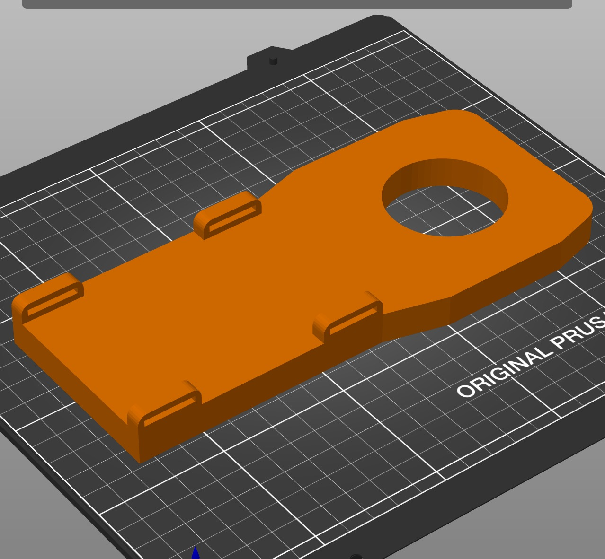
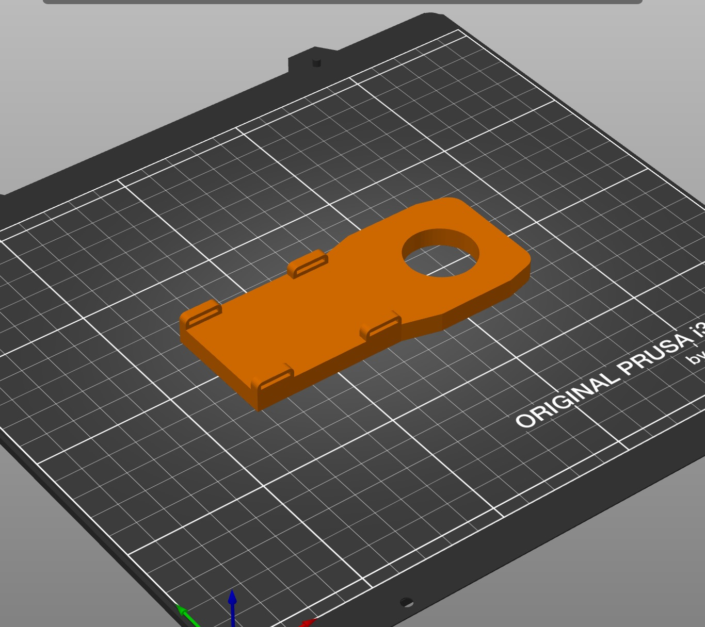
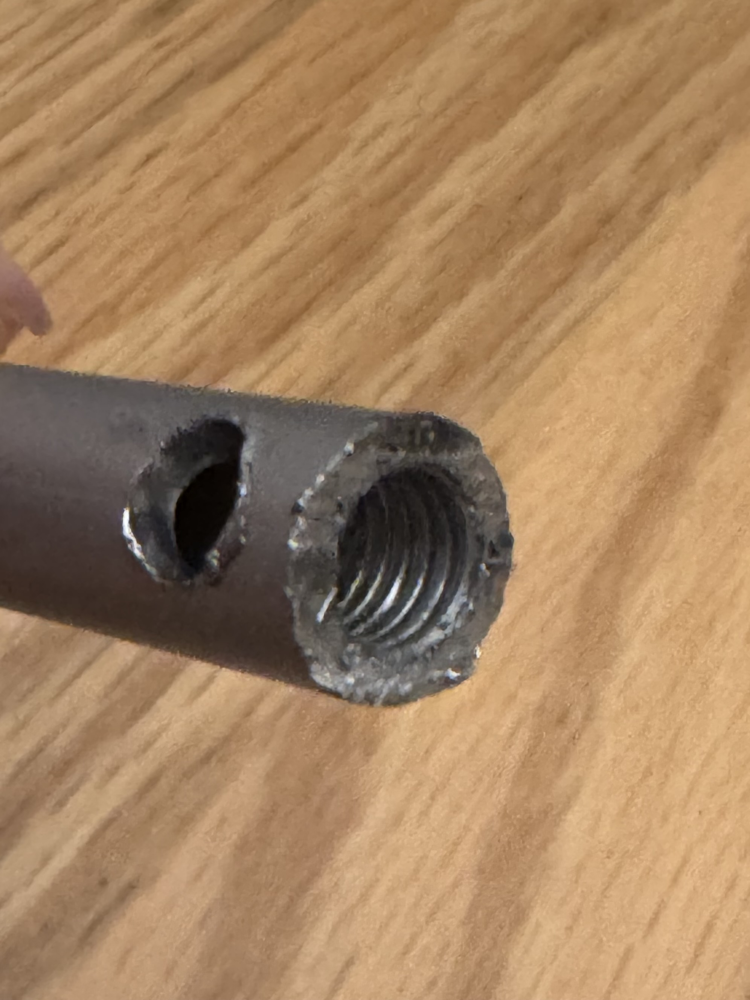
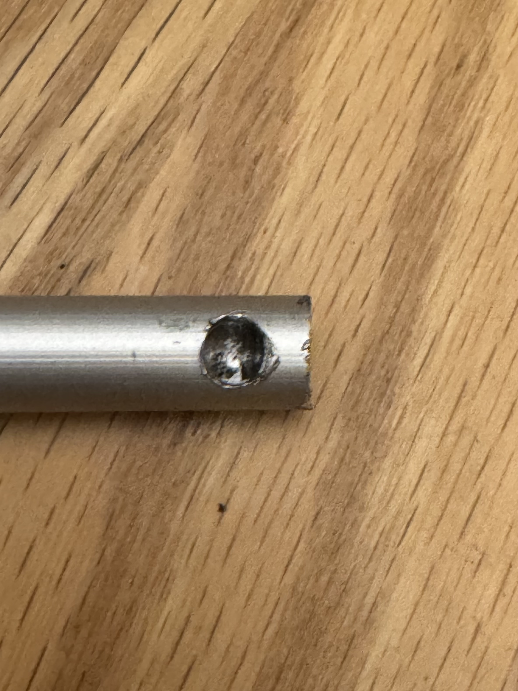
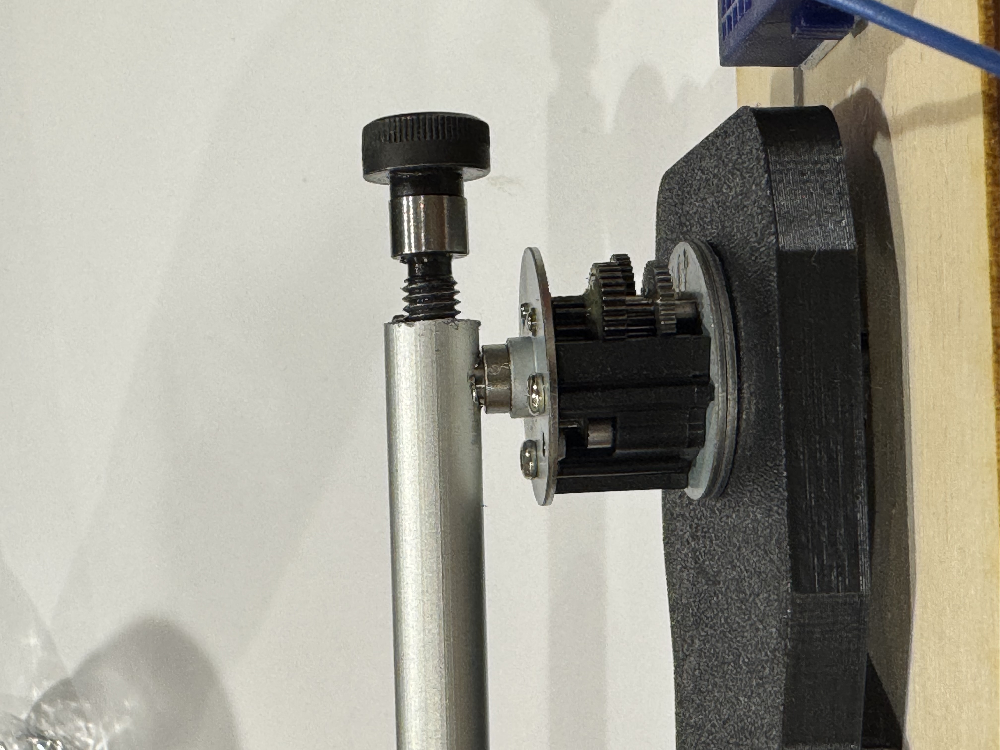
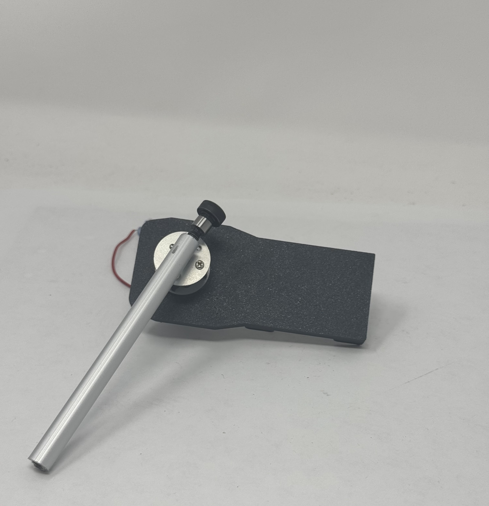
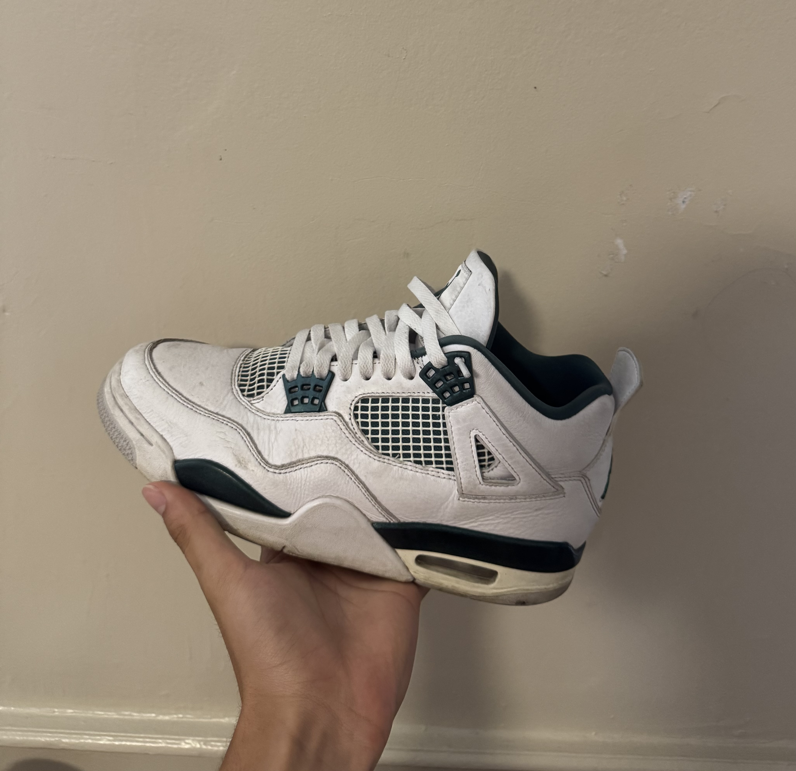

Week 05 · 3D Design
3D Design and Printing
The first physical version of the final project, a 3D printed thigh mount holding a DC motor and gearbox, with LEDs that light up when I turn the rod by hand.

Step 1: Designing the thigh mount
The plan was to take the leg charger idea from Week 1 and build the first piece of it, the part that straps to your outer thigh and holds the motor. I designed the mount in Fusion 360 with a flat surface for the motor to bolt onto, side walls to keep the motor from twisting, and 2 slots cut into the back for a strap to pass through. Nothing fancy, but it had to be strong enough to handle the torque the motor would put on it when the rod spins.


Step 2: Slicing and printing
I imported the STL into PrusaSlicer and ran into a problem right away, my part was a bit too large for the print bed, so I scaled it down to 56% of full size. That's fine for a prototype because all I really wanted out of this print was to test the geometry and the fit with the motor. After scaling I set the infill, generated supports for the overhangs, exported the gcode to an SD card, and started the print on the lab's printer.


Step 3: Motor mount and rod
Once the part was printed I mounted the DC motor and the small gearbox to the front face, using the bolt holes I'd designed in. The tricky part was the rod, this is the piece that goes onto the motor shaft and ends up attached to the calf in the final version. I needed the rod to grip onto the shaft tightly so it wouldn't slip when the leg bends, so I drilled out a hole at one end of the rod sized exactly to the motor shaft diameter, then drilled a perpendicular hole through the side and tapped it for an M6 bolt. The bolt threads in from the side and clamps the rod down onto the motor shaft, which is a basic set screw style attachment and it doesn't slip.



Step 4: Laser cut platform and LEDs
After the rod was mounted I needed a way to display the whole thing for the assignment, so I laser cut a flat wood platform with a clearance hole that matches the motor's outer diameter. The mount drops into the hole and sits flush on the platform. I taped a small breadboard next to it and wired a pair of LEDs to the motor leads, so when I spin the rod by hand and the motor acts as a generator, the LEDs flicker on.

The LEDs only flash, they don't stay lit steadily, because when you spin a DC motor back and forth the polarity of its output flips every time the direction changes. So one LED lights up when I spin one way and the other LED lights up when I spin the other way. That's the problem I solve in Week 7 with a bridge rectifier, but for now the back and forth flashing is enough to prove the concept.
Assignment Part 2: Photogrammetry
The second part of the assignment was scanning a real object. I scanned my favorite shoes using Polycam on iPhone, which is a photogrammetry app that builds a 3D mesh from a bunch of photos taken from different angles. I picked the object scan mode and did 2 full rotations around the shoe, slow enough that the app could keep track of features between frames. After it processed I could orbit the model in the app and it looked great, but Polycam puts STL and OBJ export behind a paywall, so the best I could do for free was record a screen video of the finished scan rotating.

Assignment Part 3: Final Project Plan
Project goals
- Generate electricity from walking using a wearable device
- Promote sustainable, human powered energy solutions
- Keep the design light enough and comfortable enough that the user would actually wear it
- Get a working prototype that can charge a small device (phone, flashlight, etc.)
Bill of materials
| Item | Quantity | Cost (estimate) |
|---|---|---|
| DC Motor (6V–12V) | 1 | $8 |
| Voltage Regulator | 1 | $3 |
| Rechargeable Battery (Li-ion) | 1 | $20 |
| Pulley System (belt, gears) | 1 set | $10 |
| Leg Strap or Brace | 1 | $15 |
| Wires, Solder, Connectors | Set | Already Owned |
| Enclosure (optional) | 1 | 3D printer (Free) |
| Multimeter (for testing) | 1 | Already owned |
Total estimated cost: ~$56
4-week timeline
| Week | Tasks |
|---|---|
| Week 1 | Research techniques to generate the most amount of energy efficiently. Finalize design sketch. Order all parts. Test the DC motor manually to understand output range. |
| Week 2 | Build and test the pulley and motor system. Mount to leg brace and test movement to electricity conversion. |
| Week 3 | Connect voltage regulator and battery. Run walking tests to measure charging capacity. Make mechanical and electrical adjustments. |
| Week 4 | Finalize design. Improve comfort and efficiency. Record results. Update website with documentation, photos, and demo video. |
What I learned
The biggest thing this week was getting comfortable with the workflow of Fusion → STL → slicer → gcode → print → assemble. It sounds simple, but every step has its own gotchas (bad orientation, missing supports, scaling issues), and you don't really learn them until you've printed a part that fails. The flashing LEDs at the end were the first real evidence that the energy harvesting idea would work, which gave me more confidence going into Week 7 where I actually started solving the electrical problems.